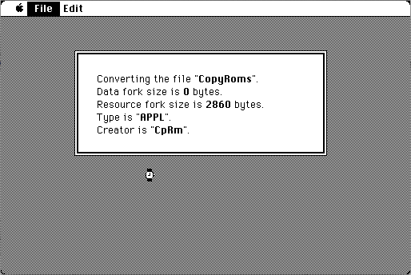

Download
binhex-40.zip (8K) BinHex v4.0 -- 02/19/85 repackaged into a zipped hfs disk image and checksum file. The disk image can be mounted with Mini vMac.
binhex-40.hqx (12K) BinHex v4.0 -- 02/19/85 in the original format.
copyright: Yves Lempereur
mod date: Jun 7, 1985
license: Freeware
Converts a Macintosh application (and other kinds of files) into a plain text file (ASCII) than can be sent through email. And also can convert it back again. Files in BinHex version 4 format are very common. Other versions of BinHex use different file formats, which are less common (see below).

Download version 5
binhex-50.zip (8K) BinHex v5.0 -- 04/19/85 repackaged into a zipped hfs disk image and checksum file. The disk image can be mounted with Mini vMac.
binhex-50.hqx (25K) BinHex v5.0 -- 04/19/85 in the original format.
Download version 2
binhex_2.0.zip (8K) BinHex v2.0 -- 10/29/84 repackaged into a zipped hfs disk image and checksum file. The disk image can be mounted with Mini vMac.
binhex_2.0.bin (8K) BinHex v2.0 -- 10/29/84 in the original format.
If you find these downloads useful, please consider helping the Gryphel Project, which hosts them.
Here are the md5 checksums for the downloads, signed with Gryphel Key 5:
--------- GRY SIGNED TEXT --------- 892a28f4add144dec7eaf2137b62c1e0 binhex-40.zip bf783c84636674a9c3501c6b38ea036b binhex-40.hqx 5e5031f890a73d48f6f6524e2b0ced32 binhex-50.zip 0dc4891d99725c20d7b0e170066ce760 binhex-50.hqx 7801733b24357ce398adec377440b1d7 binhex_2.0.zip 02d660c659c5be5871150a41b31f4e88 binhex_2.0.bin ------- BEGIN GRY SIGNATURE ------- Gry/4Xa8CFcUzxdN/PbmYcjNMrYpXnERb1wYdcmOhwbyATk+qEa5lZCziYnqU22R eiEpWkze3FTZSZrjwpFUD0aHFXEm8g4FUq75CwUlPLoeJ3do3y8ZfHM/37bdMVf8 FzdUdP561H1eITmIOqx6RVod1jUePqoaIlg5gXFvm5a07SZ1jq93Kpub94CE97lO -------- END GRY SIGNATURE --------